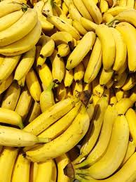

Banana

A banana is an elongated,edible fruit botanically a berry produced by several kinds of large herbaceous flowering plants in the genus Musa. In some countries, bananas used for cooking may be called plantains, distinguishing them from dessert bananas.
- Bananas are rich in the mineral potassium. Potassium helps maintainTrusted Source fluid levels in the body and regulates the movement of nutrients and waste products in and out of cells.
- Bananas contain fiber, potassium, folate, and antioxidants, such as vitamin C.All of these support heart health.
- Potassium also helps muscles to contract and nerve cells to respond. It keeps the heart beating regularly and can reduce the effect of sodium on blood pressure.
- It is best to try to get potassium from dietary sources, such as bananas. Otherwise, potassium supplements are available to purchase on our website.
- Bananas contain water and fiber, both of which promote regularity and encourage digestive health. One medium banana provides approximately 10% of a person’s fiber needs for a day.
- Potassium may reduce the risk of kidney stones forming as people age. In turn, healthy kidneys make sure that the right amount of potassium stays in the body.